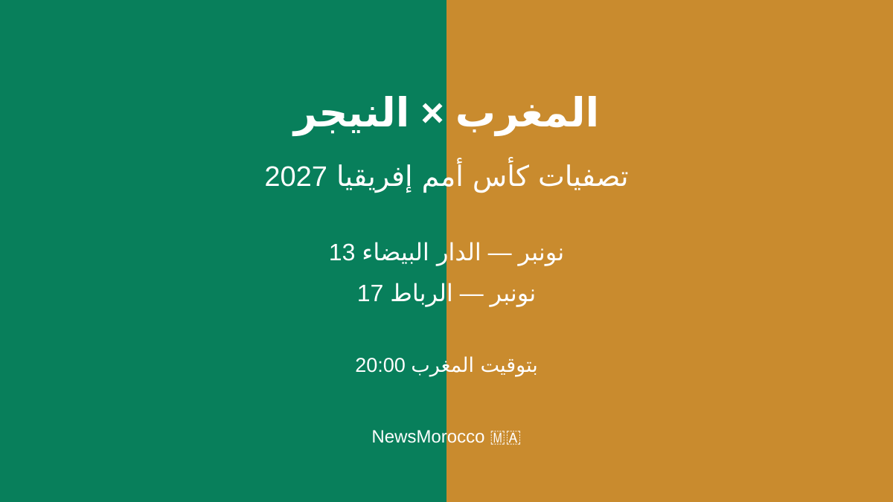

المنتخب المغربي يواجه النيجر في الدار البيضاء والرباط ضمن تصفيات كأس إفريقيا

أعلنت الجامعة الملكية المغربية لكرة القدم برنامج مباراتي المنتخب الوطني المغربي أمام النيجر برسم الجولتين الثالثة والرابعة من تصفيات كأس أمم إفريقيا 2027، في مواجهتين ستقامان بالمغرب خلال شهر نونبر المقبل.
المباراة الثانية: النيجر ضد المغرب — الثلاثاء 17 نونبر 2026، على الساعة 20:00، بملعب الأمير مولاي عبد الله بالرباط.
وبحسب المعطيات التي أعلنتها الجامعة، سيدير الحكم الصومالي عمر عبد القادر أرتان مباراة الدار البيضاء، بمساعدة مواطنيه حمزة حاجي عبدي وعلي محمود محاد. أما مباراة الإياب في الرباط فسيديرها الحكم الإثيوبي تيودروس ميتيكو، بمساعدة فاسيكا بيرو ياهوالاشيت وتيغلي غيزاو بيلتشو.
يدخل المنتخب المغربي هذه المواجهتين وهو في صدارة مجموعته برصيد ست نقاط، بعدما حقق انتصارين أمام الغابون وليسوتو خلال شتنبر. وسيكون الهدف مواصلة النتائج الإيجابية وتعزيز موقع المنتخب في سباق التأهل إلى نهائيات كأس أمم إفريقيا 2027.
وتقام نهائيات كأس أمم إفريقيا 2027 بشكل مشترك في كينيا وتنزانيا وأوغندا. وتكتسي مواجهتا النيجر أهمية كبيرة للمنتخب المغربي من أجل الاقتراب أكثر من حسم التأهل مبكراً.
← العودة إلى الصفحة الرئيسية